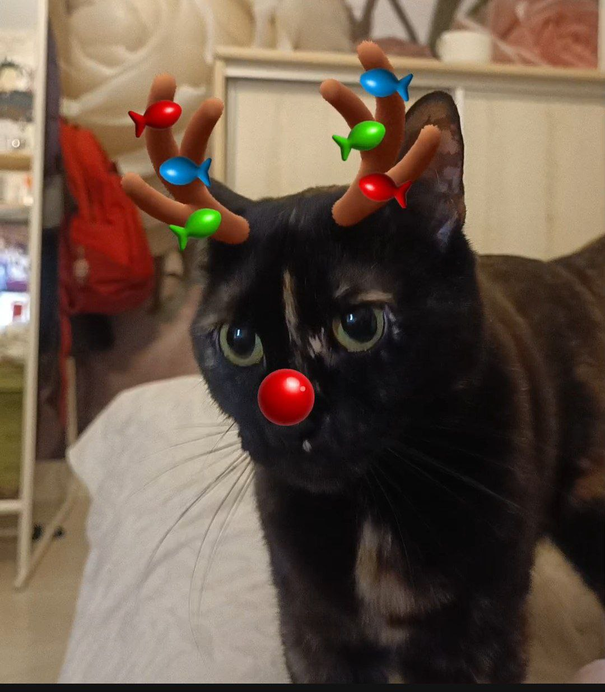
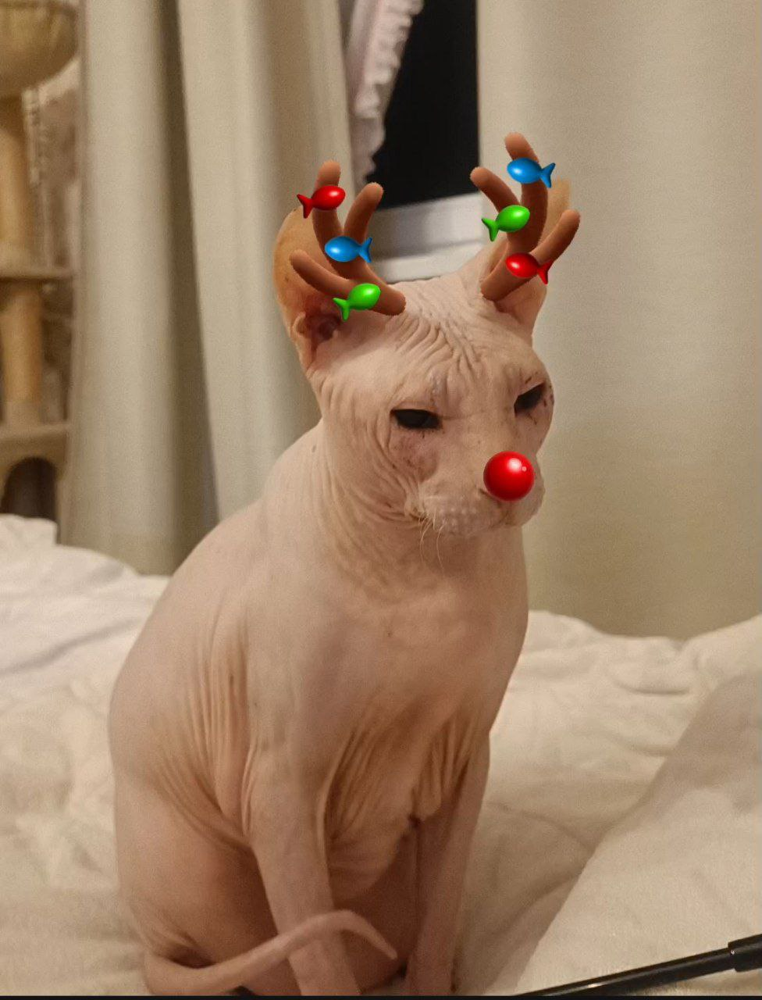

Студентка Белорусского государственного технологического университета
Факультета информационных технологий
Специальности Информационные системы и технологии
3 курса 1 группы
Vk: Татьяна Шишова
Gmail: taniishi@gmail.com
Люблю двух своих прекрасных, милых, красивых котиков и спать. :3
 